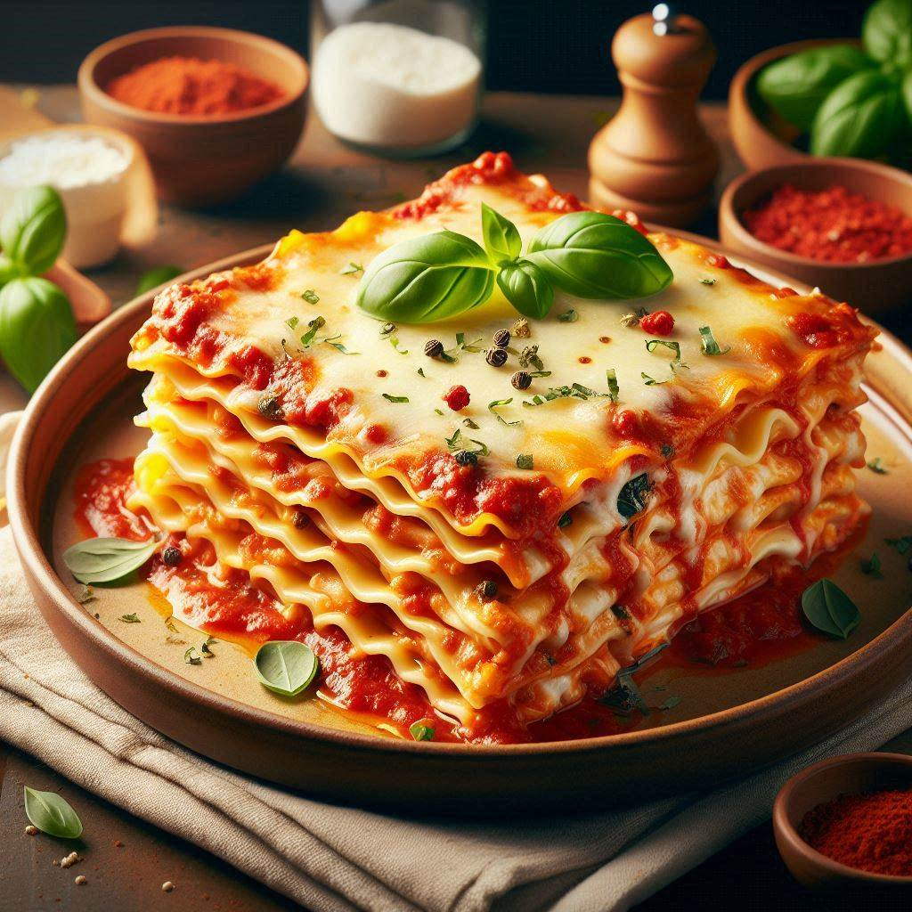

Recipe for Italian lasagna

Description
This hearty beef lasagna is the epitome of Italian-American comfort food. Layers of
wide pasta sheets alternate with a rich, savory meat sauce and a creamy blend of
cheeses, creating a dish that's both indulgent and deeply satisfying. The meat
sauce, simmered to perfection, infuses the entire dish with robust flavors of
garlic, herbs, and tomato. As it bakes, the cheese melts into gooey pockets
throughout the lasagna, while the top layer forms a golden, slightly crispy crust
that adds a delightful textural contrast.
What sets this lasagna apart is the balance of flavors and textures. The acidity
of the tomatoes cuts through the richness of the cheese and meat, while the pasta
provides a neutral canvas that soaks up all the delicious flavors. Fresh herbs add
brightness, and a touch of nutmeg in the béchamel sauce adds depth and complexity.
When served, the lasagna holds its shape beautifully, revealing distinct layers
that showcase the care put into its assembly. It's a dish that's equally at home
at a casual family dinner or a special occasion, always evoking a sense of warmth
and comfort.
Ingredients
- 1 lb lasagna noodles
- 1 lb ground beef
- 1 onion, diced
- 3 cloves garlic, minced
- 28 oz can crushed tomatoes
- 2 tbsp tomato paste
- 1 tsp dried oregano
- 1 tsp dried basil
- and pepper to taste
- 15 oz ricotta cheese
- 1 egg
- 1/4 cup fresh parsley, chopped
- 3 cups shredded mozzarella
- 1 cup grated Parmesan cheese
- For the béchamel sauce:
- 4 tbsp butter
- 1/4 cup all-purpose flour
- 3 cups milk
- 1/4 tsp ground nutmeg
Steps
- Preheat oven to 375°F (190°C).
- Cook lasagna noodles according to package instructions. Drain and set aside.
- In a large skillet, brown the ground beef. Add onion and garlic, cook until softened.
- Add crushed tomatoes, tomato paste, oregano, and basil. Simmer for 30 minutes. Season with salt and pepper.
- In a bowl, mix ricotta, egg, and parsley.
- Make the béchamel sauce: Melt butter in a saucepan. Add flour and cook for 1 minute. Gradually whisk in milk. Cook until thickened. Add nutmeg, salt, and pepper.
- Assemble the lasagna in a 9x13 inch baking dish:
- Spread a thin layer of meat sauce
- Layer of noodles
- 1/3 of the meat sauce
- 1/3 of the ricotta mixture
- 1/3 of the mozzarella
- 1/3 of the béchamel sauce
- Repeat layers twice more
- Top with remaining Parmesan
- Cover with foil and bake for 25 minutes. Remove foil and bake for another 25 minutes until golden and bubbly.
- Let stand for 15 minutes before serving.
This recipe serves 8-10 people. Enjoy your homemade lasagna!